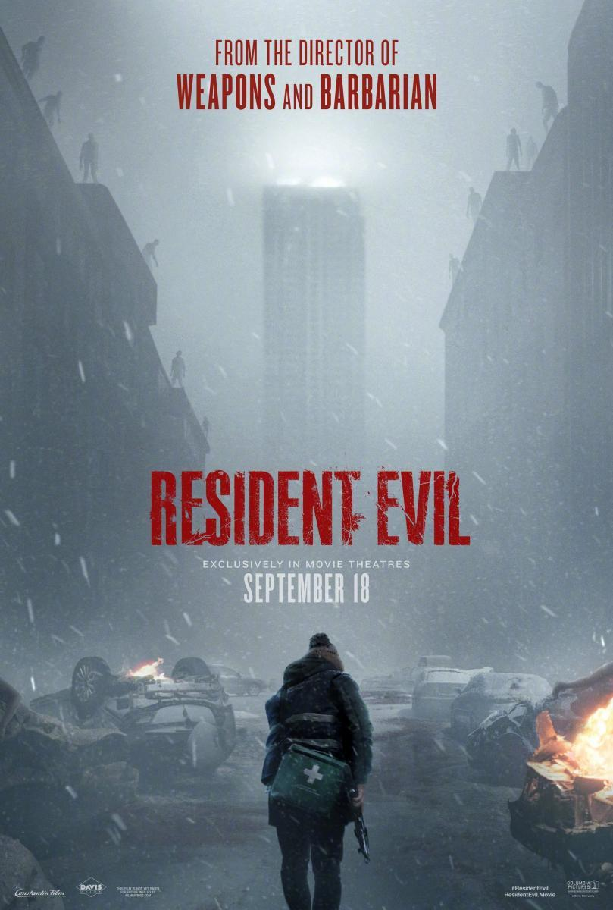
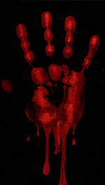

1. UNA SAGA QUE MARCÓ EL TERROR
Resident Evil es una de las sagas más importantes del género survival horror.
Creada por Capcom en 1996, comenzó como un videojuego en el que el jugador debía
explorar lugares peligrosos, enfrentarse a zombis y criaturas y administrar
cuidadosamente sus recursos. Con el paso de los años, la franquicia se convirtió
en un fenómeno internacional y llegó también al cine.
2. LA NUEVA PELÍCULA DE 2026
En 2026 se estrenó una nueva película titulada Resident Evil, dirigida por Zach Cregger
y protagonizada por Austin Abrams, Zach Cherry, Kali Reis y Paul Walter Hauser.
La película llegó a los cines el 18 de septiembre de 2026 y tiene una duración de
93 minutos. Esta nueva versión presenta una historia original dentro del universo
de Resident Evil.

3. UNA NUEVA HISTORIA
El protagonista es Bryan, interpretado por Austin Abrams, un mensajero médico
que se ve atrapado inesperadamente en una noche de caos y lucha por sobrevivir.
Aunque la película no adapta directamente la historia de uno de los videojuegos,
utiliza muchos elementos reconocibles de la saga, como el virus, las criaturas
y el ambiente de supervivencia.


4. DEL MANDO AL CINE
En los videojuegos, el jugador controla al personaje, explora
los escenarios, resuelve puzles y decide como utilizar sus recursos.
El miedo surge porque el jugador participa directamente en la historia.
En una película, en cambio, el espectador no puede tomar decisiones,
por lo que el director debe utilizar otros recursos, como la música,
la fotografía y el montaje.
5. UNA ADAPTACIÓN CON IDENTIDAD PROPIA
La película de 2026 no es una copia de los videojuegos, sino una adaptación
que toma su esencia: el terror, la supervivencia, el peligro biológico y la
sensación de estar atrapado en una situación cada vez más difícil de controlar.
De esta manera, Resident Evil vuelve a demostrar cómo un videojuego puede
evolucionar y encontrar nuevas formas de contar historias sin abandonar los
elementos que lo hicieron reconocible.